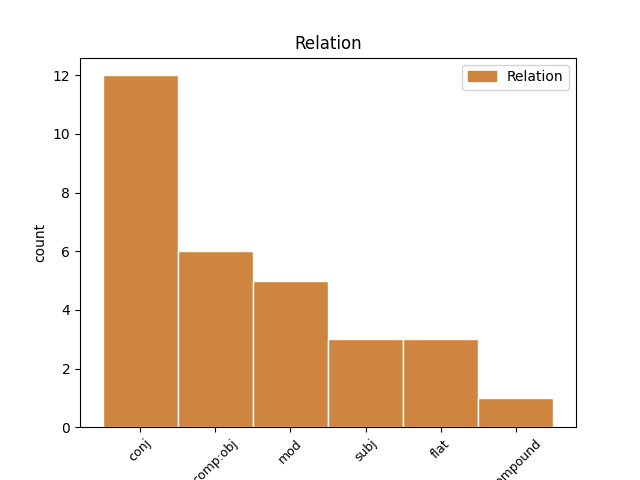
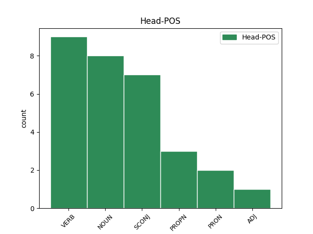
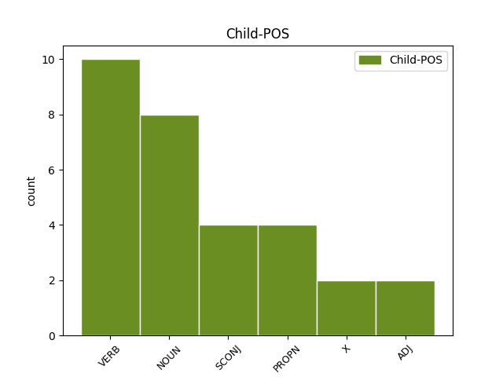

Distribution of features within this leaf



Agreement Rules sorted by frequency.
- When the dependent token is the direct object complements(comp:obj) of the head token, and the dependent token is VERB.
1 My _ _ _ _ 0 _ _ _
2 grandmother _ _ _ _ 0 _ _ _
3 , _ _ _ _ 0 _ _ _
4 who _ _ _ _ 0 _ _ _
5 was _ _ _ _ 0 _ _ _
6 firmly _ _ _ _ 0 _ _ _
7 convinced _ _ _ _ 0 _ _ _
8 by _ _ _ _ 0 _ _ _
9 the _ _ _ _ 0 _ _ _
10 Word _ _ _ _ 0 _ _ _
11 of _ _ _ _ 0 _ _ _
12 the _ _ _ _ 0 _ _ _
13 Lord _ _ _ _ 0 _ _ _
14 , _ _ _ _ 0 _ _ _
15 took _ _ _ _ 0 _ _ _
16 more _ _ _ _ 0 _ _ _
17 pleasure _ _ _ _ 0 _ _ _
18 in _ _ _ _ 0 _ _ _
19 that _ _ _ _ 0 _ _ _
20 hour _ _ _ _ 0 _ _ _
21 than _ _ _ _ 0 _ _ _
22 in _ _ _ _ 0 _ _ _
23 any _ _ _ _ 0 _ _ _
24 other _ _ _ _ 0 _ _ _
25 of _ _ _ _ 0 _ _ _
26 the _ _ _ _ 0 _ _ _
27 week _ _ _ _ 0 _ _ _
28 , _ _ _ _ 0 _ _ _
29 including _ _ _ _ 0 _ _ _
30 2 _ _ _ _ 0 _ _ _
31 p.m. _ _ _ _ 0 _ _ _
32 Thursday _ _ _ _ 0 _ _ _
33 when when SCONJ _ Case=Nom 0 _ _ _
34 she _ _ _ _ 0 _ _ _
35 drew draw VERB PAST Case=Nom 33 comp:obj _ _
36 her _ _ _ _ 0 _ _ _
37 pension _ _ _ _ 0 _ _ _
38 . _ _ _ _ 0 _ _ _
1 Otherwise _ _ _ _ 0 _ _ _
2 there _ _ _ _ 0 _ _ _
3 was _ _ _ _ 0 _ _ _
4 only _ _ _ _ 0 _ _ _
5 an _ _ _ _ 0 _ _ _
6 indefinable _ _ _ _ 0 _ _ _
7 , _ _ _ _ 0 _ _ _
8 faint _ _ _ _ 0 _ _ _
9 expression _ _ _ _ 0 _ _ _
10 of _ _ _ _ 0 _ _ _
11 his _ _ _ _ 0 _ _ _
12 lips _ _ _ _ 0 _ _ _
13 , _ _ _ _ 0 _ _ _
14 something _ _ _ _ 0 _ _ _
15 stealthy _ _ _ _ 0 _ _ _
16 – _ _ _ _ 0 _ _ _
17 a _ _ _ _ 0 _ _ _
18 smile smile NOUN SG-NOM Case=Nom 0 _ _ _
19 – _ _ _ _ 0 _ _ _
20 not _ _ _ _ 0 _ _ _
21 a _ _ _ _ 0 _ _ _
22 smile smile NOUN SG-NOM Case=Nom 18 conj _ _
23 – _ _ _ _ 0 _ _ _
24 I _ _ _ _ 0 _ _ _
25 remember _ _ _ _ 0 _ _ _
26 it _ _ _ _ 0 _ _ _
27 , _ _ _ _ 0 _ _ _
28 but _ _ _ _ 0 _ _ _
29 I _ _ _ _ 0 _ _ _
30 ca _ _ _ _ 0 _ _ _
31 n't _ _ _ _ 0 _ _ _
32 explain _ _ _ _ 0 _ _ _
33 . _ _ _ _ 0 _ _ _
1 You _ _ _ _ 0 _ _ _
2 can _ _ _ _ 0 _ _ _
3 add _ _ _ _ 0 _ _ _
4 fields _ _ _ _ 0 _ _ _
5 to _ _ _ _ 0 _ _ _
6 the _ _ _ _ 0 _ _ _
7 view _ _ _ _ 0 _ _ _
8 , _ _ _ _ 0 _ _ _
9 move _ _ _ _ 0 _ _ _
10 or _ _ _ _ 0 _ _ _
11 remove _ _ _ _ 0 _ _ _
12 fields _ _ _ _ 0 _ _ _
13 , _ _ _ _ 0 _ _ _
14 and _ _ _ _ 0 _ _ _
15 filter _ _ _ _ 0 _ _ _
16 , _ _ _ _ 0 _ _ _
17 sort sort VERB INF Case=Nom 0 _ _ _
18 , _ _ _ _ 0 _ _ _
19 and _ _ _ _ 0 _ _ _
20 group group VERB INF Case=Nom 17 conj _ _
21 data _ _ _ _ 0 _ _ _
22 . _ _ _ _ 0 _ _ _
1 My _ _ _ _ 0 _ _ _
2 grandmother _ _ _ _ 0 _ _ _
3 , _ _ _ _ 0 _ _ _
4 who _ _ _ _ 0 _ _ _
5 was _ _ _ _ 0 _ _ _
6 firmly _ _ _ _ 0 _ _ _
7 convinced _ _ _ _ 0 _ _ _
8 by _ _ _ _ 0 _ _ _
9 the _ _ _ _ 0 _ _ _
10 Word _ _ _ _ 0 _ _ _
11 of _ _ _ _ 0 _ _ _
12 the _ _ _ _ 0 _ _ _
13 Lord _ _ _ _ 0 _ _ _
14 , _ _ _ _ 0 _ _ _
15 took _ _ _ _ 0 _ _ _
16 more _ _ _ _ 0 _ _ _
17 pleasure _ _ _ _ 0 _ _ _
18 in _ _ _ _ 0 _ _ _
19 that _ _ _ _ 0 _ _ _
20 hour _ _ _ _ 0 _ _ _
21 than _ _ _ _ 0 _ _ _
22 in _ _ _ _ 0 _ _ _
23 any _ _ _ _ 0 _ _ _
24 other _ _ _ _ 0 _ _ _
25 of _ _ _ _ 0 _ _ _
26 the _ _ _ _ 0 _ _ _
27 week _ _ _ _ 0 _ _ _
28 , _ _ _ _ 0 _ _ _
29 including _ _ _ _ 0 _ _ _
30 2 _ _ _ _ 0 _ _ _
31 p.m. _ _ _ _ 0 _ _ _
32 Thursday thursday NOUN SG-NOM Case=Nom 0 _ _ _
33 when when SCONJ _ Case=Nom 32 mod _ _
34 she _ _ _ _ 0 _ _ _
35 drew _ _ _ _ 0 _ _ _
36 her _ _ _ _ 0 _ _ _
37 pension _ _ _ _ 0 _ _ _
38 . _ _ _ _ 0 _ _ _
1 A _ _ _ _ 0 _ _ _
2 standard _ _ _ _ 0 _ _ _
3 file _ _ _ _ 0 _ _ _
4 format _ _ _ _ 0 _ _ _
5 provided _ _ _ _ 0 _ _ _
6 by _ _ _ _ 0 _ _ _
7 Microsoft _ _ _ _ 0 _ _ _
8 Data _ _ _ _ 0 _ _ _
9 Links _ _ _ _ 0 _ _ _
10 to _ _ _ _ 0 _ _ _
11 create _ _ _ _ 0 _ _ _
12 file-persistent _ _ _ _ 0 _ _ _
13 OLE OLE PROPN NOM Case=Nom 0 _ _ _
14 DB db X NOM Case=Nom 13 flat _ _
15 data _ _ _ _ 0 _ _ _
16 source _ _ _ _ 0 _ _ _
17 object _ _ _ _ 0 _ _ _
18 definitions _ _ _ _ 0 _ _ _
19 . _ _ _ _ 0 _ _ _
1 If _ _ _ _ 0 _ _ _
2 it _ _ _ _ 0 _ _ _
3 finds _ _ _ _ 0 _ _ _
4 a _ _ _ _ 0 _ _ _
5 matching _ _ _ _ 0 _ _ _
6 value _ _ _ _ 0 _ _ _
7 name _ _ _ _ 0 _ _ _
8 , _ _ _ _ 0 _ _ _
9 Access Access PROPN SG-NOM Case=Nom 10 subj _ _
10 loads load VERB PRES Case=Nom 0 _ _ _
11 the _ _ _ _ 0 _ _ _
12 reference _ _ _ _ 0 _ _ _
13 from _ _ _ _ 0 _ _ _
14 the _ _ _ _ 0 _ _ _
15 path _ _ _ _ 0 _ _ _
16 specified _ _ _ _ 0 _ _ _
17 in _ _ _ _ 0 _ _ _
18 the _ _ _ _ 0 _ _ _
19 corresponding _ _ _ _ 0 _ _ _
20 value _ _ _ _ 0 _ _ _
21 data _ _ _ _ 0 _ _ _
22 . _ _ _ _ 0 _ _ _
1 ReportML _ _ _ _ 0 _ _ _
2 is _ _ _ _ 0 _ _ _
3 a _ _ _ _ 0 _ _ _
4 " _ _ _ _ 0 _ _ _
5 language _ _ _ _ 0 _ _ _
6 " _ _ _ _ 0 _ _ _
7 developed _ _ _ _ 0 _ _ _
8 by _ _ _ _ 0 _ _ _
9 Microsoft _ _ _ _ 0 _ _ _
10 and _ _ _ _ 0 _ _ _
11 specific _ _ _ _ 0 _ _ _
12 to _ _ _ _ 0 _ _ _
13 Access _ _ _ _ 0 _ _ _
14 which _ _ _ _ 0 _ _ _
15 can _ _ _ _ 0 _ _ _
16 be _ _ _ _ 0 _ _ _
17 used _ _ _ _ 0 _ _ _
18 to _ _ _ _ 0 _ _ _
19 describe _ _ _ _ 0 _ _ _
20 Access Access PROPN SG-NOM Case=Nom 22 compound _ _
21 database _ _ _ _ 0 _ _ _
22 objects object NOUN PL-NOM Case=Nom 0 _ _ _
23 in _ _ _ _ 0 _ _ _
24 XML _ _ _ _ 0 _ _ _
25 . _ _ _ _ 0 _ _ _
1 For _ _ _ _ 0 _ _ _
2 more _ _ _ _ 0 _ _ _
3 information _ _ _ _ 0 _ _ _
4 about _ _ _ _ 0 _ _ _
5 environment _ _ _ _ 0 _ _ _
6 variables _ _ _ _ 0 _ _ _
7 , _ _ _ _ 0 _ _ _
8 see _ _ _ _ 0 _ _ _
9 Windows Windows PROPN SG-NOM Case=Nom 0 _ _ _
10 Help Help PROPN SG-NOM Case=Nom 9 flat _ SpaceAfter=No
11 . _ _ _ _ 0 _ _ _
1 It _ _ _ _ 0 _ _ _
2 is _ _ _ _ 0 _ _ _
3 accompanied _ _ _ _ 0 _ _ _
4 by _ _ _ _ 0 _ _ _
5 the _ _ _ _ 0 _ _ _
6 further _ _ _ _ 0 _ _ _
7 reflection _ _ _ _ 0 _ _ _
8 ( _ _ _ _ 0 _ _ _
9 partly _ _ _ _ 0 _ _ _
10 proud _ _ _ _ 0 _ _ _
11 , _ _ _ _ 0 _ _ _
12 mostly _ _ _ _ 0 _ _ _
13 bitter _ _ _ _ 0 _ _ _
14 ) _ _ _ _ 0 _ _ _
15 that _ _ _ _ 0 _ _ _
16 we we PRON PERS-P1PL-NOM Case=Nom|Number=Plur|Person=1|PronType=Prs 0 _ _ _
17 Jews jew NOUN PL-NOM Case=Nom 16 mod _ _
18 seem _ _ _ _ 0 _ _ _
19 to _ _ _ _ 0 _ _ _
20 have _ _ _ _ 0 _ _ _
21 a _ _ _ _ 0 _ _ _
22 genius _ _ _ _ 0 _ _ _
23 for _ _ _ _ 0 _ _ _
24 finding _ _ _ _ 0 _ _ _
25 the _ _ _ _ 0 _ _ _
26 heart _ _ _ _ 0 _ _ _
27 of _ _ _ _ 0 _ _ _
28 the _ _ _ _ 0 _ _ _
29 crisis _ _ _ _ 0 _ _ _
30 . _ _ _ _ 0 _ _ _
1 He _ _ _ _ 0 _ _ _
2 paid _ _ _ _ 0 _ _ _
3 no _ _ _ _ 0 _ _ _
4 attention _ _ _ _ 0 _ _ _
5 to _ _ _ _ 0 _ _ _
6 my _ _ _ _ 0 _ _ _
7 explanations _ _ _ _ 0 _ _ _
8 , _ _ _ _ 0 _ _ _
9 and _ _ _ _ 0 _ _ _
10 , _ _ _ _ 0 _ _ _
11 playing _ _ _ _ 0 _ _ _
12 with _ _ _ _ 0 _ _ _
13 a _ _ _ _ 0 _ _ _
14 stick _ _ _ _ 0 _ _ _
15 of _ _ _ _ 0 _ _ _
16 sealing-wax _ _ _ _ 0 _ _ _
17 , _ _ _ _ 0 _ _ _
18 repeated _ _ _ _ 0 _ _ _
19 several _ _ _ _ 0 _ _ _
20 times _ _ _ _ 0 _ _ _
21 that _ _ _ _ 0 _ _ _
22 the _ _ _ _ 0 _ _ _
23 situation _ _ _ _ 0 _ _ _
24 was _ _ _ _ 0 _ _ _
25 ' _ _ _ _ 0 _ _ _
26 very _ _ _ _ 0 _ _ _
27 grave grave ADJ POS Case=Nom 0 _ _ _
28 , _ _ _ _ 0 _ _ _
29 very _ _ _ _ 0 _ _ _
30 grave grave ADJ POS Case=Nom 27 conj _ SpaceAfter=No
31 . _ _ _ _ 0 _ _ _
32 ' _ _ _ _ 0 _ _ _
1 One _ _ _ _ 0 _ _ _
2 evening _ _ _ _ 0 _ _ _
3 a _ _ _ _ 0 _ _ _
4 grass _ _ _ _ 0 _ _ _
5 shed shed NOUN SG-NOM Case=Nom 23 subj _ _
6 full _ _ _ _ 0 _ _ _
7 of _ _ _ _ 0 _ _ _
8 calico _ _ _ _ 0 _ _ _
9 , _ _ _ _ 0 _ _ _
10 cotton _ _ _ _ 0 _ _ _
11 prints _ _ _ _ 0 _ _ _
12 , _ _ _ _ 0 _ _ _
13 beads _ _ _ _ 0 _ _ _
14 , _ _ _ _ 0 _ _ _
15 and _ _ _ _ 0 _ _ _
16 I _ _ _ _ 0 _ _ _
17 do _ _ _ _ 0 _ _ _
18 n't _ _ _ _ 0 _ _ _
19 know _ _ _ _ 0 _ _ _
20 what _ _ _ _ 0 _ _ _
21 else _ _ _ _ 0 _ _ _
22 , _ _ _ _ 0 _ _ _
23 burst burst VERB PAST Case=Nom 0 _ _ _
24 into _ _ _ _ 0 _ _ _
25 a _ _ _ _ 0 _ _ _
26 blaze _ _ _ _ 0 _ _ _
27 so _ _ _ _ 0 _ _ _
28 suddenly _ _ _ _ 0 _ _ _
29 that _ _ _ _ 0 _ _ _
30 you _ _ _ _ 0 _ _ _
31 would _ _ _ _ 0 _ _ _
32 have _ _ _ _ 0 _ _ _
33 thought _ _ _ _ 0 _ _ _
34 the _ _ _ _ 0 _ _ _
35 earth _ _ _ _ 0 _ _ _
36 had _ _ _ _ 0 _ _ _
37 opened _ _ _ _ 0 _ _ _
38 to _ _ _ _ 0 _ _ _
39 let _ _ _ _ 0 _ _ _
40 an _ _ _ _ 0 _ _ _
41 avenging _ _ _ _ 0 _ _ _
42 fire _ _ _ _ 0 _ _ _
43 consume _ _ _ _ 0 _ _ _
44 all _ _ _ _ 0 _ _ _
45 that _ _ _ _ 0 _ _ _
46 trash _ _ _ _ 0 _ _ _
47 . _ _ _ _ 0 _ _ _
1 Have _ _ _ _ 0 _ _ _
2 my _ _ _ _ 0 _ _ _
3 glass _ _ _ _ 0 _ _ _
4 , _ _ _ _ 0 _ _ _
5 she _ _ _ _ 0 _ _ _
6 said _ _ _ _ 0 _ _ _
7 , _ _ _ _ 0 _ _ _
8 as _ _ _ _ 0 _ _ _
9 there _ _ _ _ 0 _ _ _
10 were _ _ _ _ 0 _ _ _
11 no _ _ _ _ 0 _ _ _
12 spare spare ADJ POS Case=Nom 13 mod _ _
13 ones one PRON IND-PL-NOM Case=Nom 0 _ _ _
14 to _ _ _ _ 0 _ _ _
15 go _ _ _ _ 0 _ _ _
16 round _ _ _ _ 0 _ _ _
17 . _ _ _ _ 0 _ _ _
1 These _ _ _ _ 0 _ _ _
2 were _ _ _ _ 0 _ _ _
3 his _ _ _ _ 0 _ _ _
4 happiest _ _ _ _ 0 _ _ _
5 times _ _ _ _ 0 _ _ _
6 , _ _ _ _ 0 _ _ _
7 the _ _ _ _ 0 _ _ _
8 times _ _ _ _ 0 _ _ _
9 when when SCONJ _ Case=Nom 0 _ _ _
10 his _ _ _ _ 0 _ _ _
11 paperwork _ _ _ _ 0 _ _ _
12 was _ _ _ _ 0 _ _ _
13 done _ _ _ _ 0 _ _ _
14 , _ _ _ _ 0 _ _ _
15 when when SCONJ _ Case=Nom 9 conj _ _
16 he _ _ _ _ 0 _ _ _
17 could _ _ _ _ 0 _ _ _
18 hear _ _ _ _ 0 _ _ _
19 his _ _ _ _ 0 _ _ _
20 secretary _ _ _ _ 0 _ _ _
21 rattling _ _ _ _ 0 _ _ _
22 at _ _ _ _ 0 _ _ _
23 the _ _ _ _ 0 _ _ _
24 upright _ _ _ _ 0 _ _ _
25 Remington _ _ _ _ 0 _ _ _
26 as _ _ _ _ 0 _ _ _
27 though _ _ _ _ 0 _ _ _
28 it _ _ _ _ 0 _ _ _
29 were _ _ _ _ 0 _ _ _
30 a _ _ _ _ 0 _ _ _
31 church _ _ _ _ 0 _ _ _
32 piano _ _ _ _ 0 _ _ _
33 . _ _ _ _ 0 _ _ _
No disagree examples found.